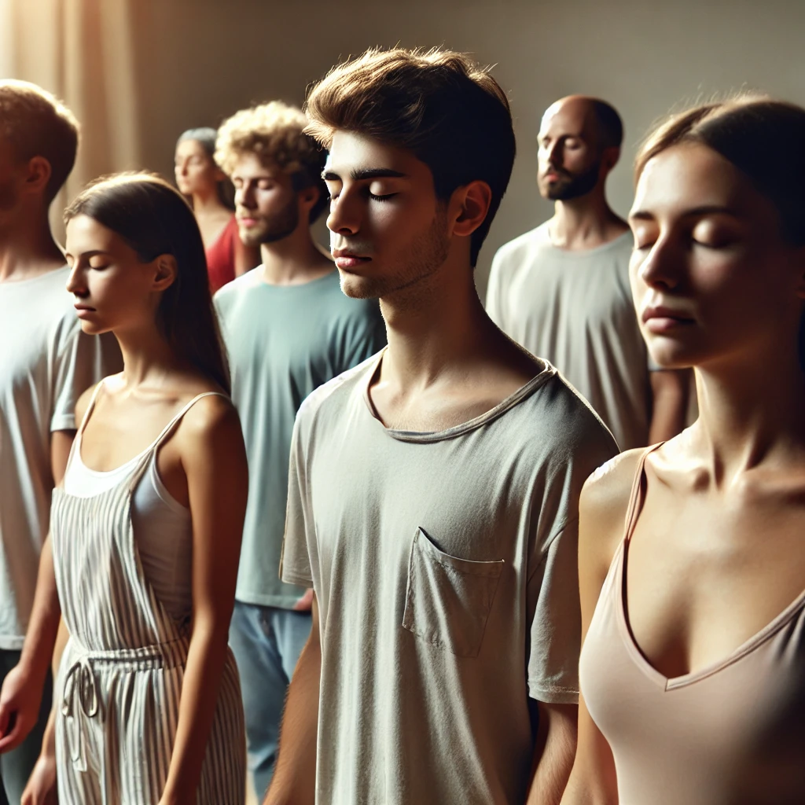

Méditation Gourishankar
La méditation Gourishankar est une puissante technique de centrage qui travaille sur le troisième œil. Cette méditation se compose de quatre étapes, chacune durant 15 minutes. Les deux premières étapes préparent le méditant à l'expérience spontanée de la troisième étape. Il est dit que si la respiration est bien effectuée lors de la première étape, le méditant ressentira comme s'il était sur le Gourishankar (Mont Everest).
Pour pratiquer cette méditation : Téléchargez l'audio et écoutez-le tout en suivant les étapes ci-dessous.
1. Première Étape : 15 Minutes
Asseyez-vous les yeux fermés. Inspirez profondément par le nez, remplissez vos poumons et retenez votre souffle aussi longtemps que possible. Ensuite, expirez doucement par la bouche, gardant vos poumons vides aussi longtemps que possible. Répétez ce cycle.

2. Deuxième Étape : 15 Minutes
Revenez à une respiration normale. Gardez votre regard doux et fixez une flamme ou une lumière bleue clignotante (stroboscopique). Restez immobile pendant ce processus.
Remarque 1 : Les personnes atteintes de troubles neurologiques comme l'épilepsie ne doivent jamais utiliser de lumière stroboscopique pour cette méditation. Ils peuvent à la place réaliser la deuxième étape avec un bandeau sur les yeux.
Remarque 2 : La musique dans la deuxième étape de cette méditation a un rythme qui est sept fois le rythme cardiaque normal. Si possible, la lumière stroboscopique doit être synchronisée à une fréquence de 490 par minute. Si une lumière stroboscopique n'est pas disponible, vous pouvez utiliser une bougie.

3. Troisième Étape : 15 Minutes
Les yeux fermés, levez-vous et permettez à votre corps d'être détendu et réceptif. Les énergies subtiles à l'intérieur de vous déplaceront votre corps hors de votre contrôle normal. Ne vous déplacez pas intentionnellement ; laissez le mouvement se produire de lui-même.
4. Quatrième Étape : 15 Minutes
Gardez les yeux fermés, allongez-vous et restez immobile. Entrez dans un état de silence et permettez à l'observation de se produire naturellement.